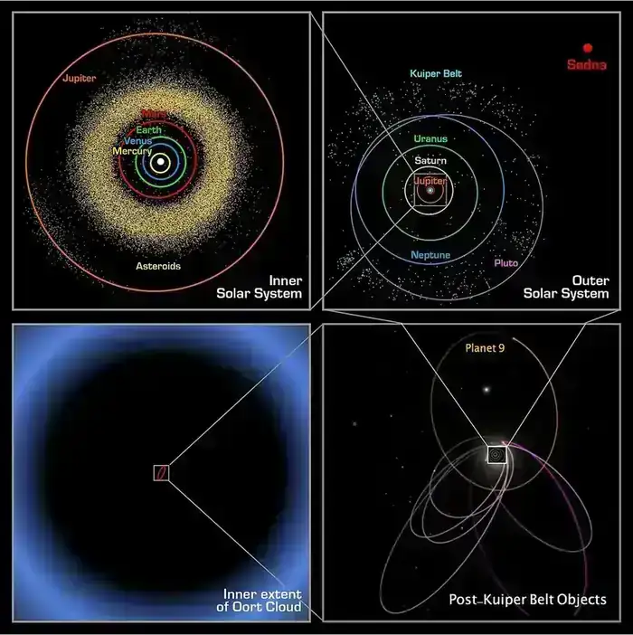
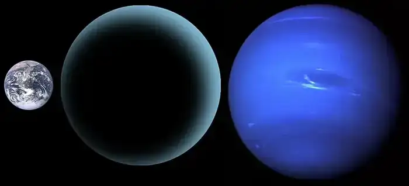

The clustering
In 2016, Konstantin Batygin and Mike Brown pointed at a set of extreme trans-Neptunian objects whose orbits share an argument of perihelion — they swing closest to the Sun in the same direction, tilted the same way. For six objects drawn from a supposed random distribution, the alignment is unlikely at roughly the 0.1% level.
Maps, diagrams and images





Their explanation is a planet of five to ten Earth masses on an eccentric orbit hundreds of astronomical units out, inclined about 30 degrees to the plane. Simulations with such a planet reproduce the alignment and predict additional populations — some perpendicular orbits, some retrograde — which have since been partially observed.
The alternatives
Observational bias. We find objects where we look, and surveys have not covered the sky uniformly. A clustering in the discovery data can be a clustering in the telescopes.
A self-gravitating disk. A population of smaller bodies on inclined orbits can maintain the alignment collectively, without a planet — a proposal that has gained traction since 2023.
The galactic tide. The Milky Way's gravitational field stretches the outer solar system, and can imprint alignments that a planet is then invoked to explain.
The predicted orbit is far away and slow: a planet at 400–800 AU takes ten thousand years or more to complete an orbit, and is faint in reflected light. Most of the sky has not been surveyed to the necessary depth.
The Vera Rubin Observatory's repeated all-sky imaging is the first survey capable of covering the search space systematically. If Planet Nine exists and is not absurdly dark, the next few years should find it — or the non-detection will constrain the hypothesis sharply.
The honest status
This is a live debate in the good sense: a specific, testable prediction, made publicly, with a defined observation that would settle it. That is rarer than it sounds.
Two cautions. First, 'Planet Nine' is not Nibiru — there is no connection to the collision myth, no 3,600-year orbit crossing the inner solar system, and no role in any doomsday claim. Second, the clustering evidence has weakened as more objects are found, which is exactly how a hypothesis should be treated: the sample grew, and the signal needs re-testing.
Sources for this page
- Batygin & Brown (2016), evidence for a distant giant planetiopscience.iop.org
- Wikipedia, “Planet Nine” — evidence, predictions, criticismen.wikipedia.org
- Rubin Observatory, the Legacy Survey of Space and Timerubinobservatory.org
- NASA, trans-Neptunian objects and the Kuiper Beltscience.nasa.gov
Open resources on this topic
- BookO.P. Yacht Services Corp. v. M/Y Planet Nine (Internet Archive, free to read)
- BookObservational Constraints on Planet Nine: Astrometry of Pluto and Other Trans-Neptunian Objects — ['Matthew J. Holman', 'Matthew J. Payne'] · 2016 (Internet Archive, free to read)
- BookSolar Obliquity Induced by Planet Nine — ['Elizabeth Bailey', 'Konstantin Batygin', 'Michael E. Brown · 2016 (Internet Archive, free to read)
- PapersOpen-access articles: DOAJ · PubMed Central · Internet Archive Scholar
- BooksPublic-domain and borrowable copies: Open Library · Project Gutenberg · Google Books
Cite this page
Momin, S. (2026). Planet Nine. The Larger World Archive. https://drsamonline.github.io/LARGE_GLOBE/planet-nine.htmlMomin, Sohil. “Planet Nine.” The Larger World Archive, 2026, https://drsamonline.github.io/LARGE_GLOBE/planet-nine.html.Momin, Sohil. “Planet Nine.” The Larger World Archive, 2026. https://drsamonline.github.io/LARGE_GLOBE/planet-nine.html.@misc{planet2026planet,
author = {Momin, Sohil},
title = {Planet Nine},
year = {2026},
howpublished = {The Larger World Archive},
url = {https://drsamonline.github.io/LARGE_GLOBE/planet-nine.html},
note = {Last reviewed 20 November 2026}
}Last reviewed 20 November 2026 · Corrections policy · this page is not peer reviewed